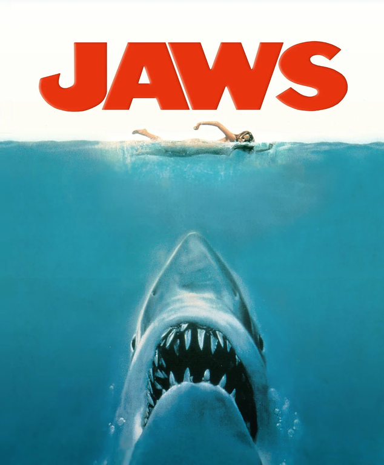
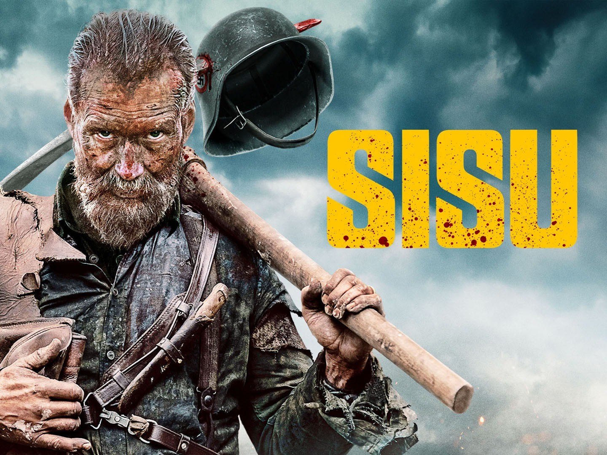

<!-- Write your code below -->
<!DOCTYPE html>
<html>
   <head> 
      <style>
      <title>Text alignment</title> 
      
         {text-align: left;} 
      h1 {text-align: center;}
      p {text-align: left;}
      div {text-align: center;}
      </style> 
 
   </head>
   </html>
   <body>
<h1>Kenneth Ogilvie's Top Movies</h1>
<center>></center>
<hr>
<h2> The Angel's Share (2012)</h2>
<h3>Director: Ken Loach</h3> 
<p> Great Scottish Comedy Film. Set in Glasgow this film is about Robbie (Paul Brannigan) a young offender who ends up on community service trying to sort his life out.
  While serving a community service order, he meets Rhino, Albert and Mo who, like him, find it impossible to find work because of their criminal records.Little did Robbie imagine how turning to drink might change their lives - not cheap fortified wine, but the best malt whiskies in the world.
<p>The Angels Share is defined as  the amount of an alcoholic drink (such as cognac, brandy, or whiskey) that is lost to evaporation when the liquid is being aged in porous oak barrels. 
</p>And so the premise of the film is they hatch to steal  for a private collector extracts from a rare cask which takes them up to the islands on an intrepid mini-"Mission Impossible", which after some ups and downs ends happily for all.
<hr>
<h2> Jaws (1975)</h2>
<h3> Director: Steven Spielberg</h3>
<p> Some of the footage in the film is of an actual great white shark. 
    The rest uses a mechanical shark patterned on the real thing. 
    The illusion is complete. We see the shark close up, we look in its relentless eye, and it just plain feels like a shark. "Jaws" is a great adventure movie of the kind we don't get very often any more. It's clean-cut adventure, without the gratuitous violence of so many action pictures. It has the necessary amount of blood and guts to work -- but none extra. And it's one hell of a good story, brilliantly told.</p>
    <hr>

<h2> Sisu (2022)</h2>
<h3>Director: Jalmari Helander</h3>
<p> When an ex-soldier who discovers gold in the Lapland wilderness tries to take the loot into the city, Nazi soldiers led by a brutal SS officer battle him.</p>
<p>This was a pleasant surprise! We have Tarantino-inspired bloody action, silent and very charismatic protagonist, beautiful imaginery from actual locations in Lapland, really good soundtrack and some innovative fighting and survival scenes, and of course Finnish Sisu.
</p>
</body>
</html>